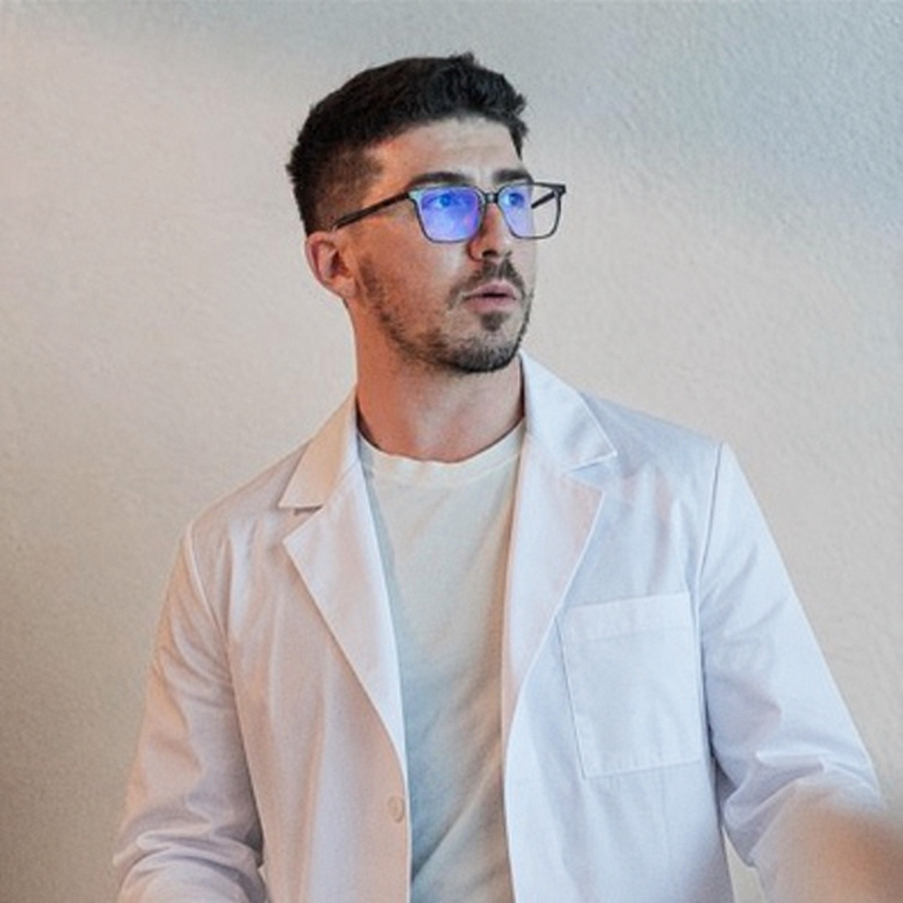

Prima visito il paziente. Poi metto insieme tutto il resto.

La visita fisiatrica
Il mio lavoro comincia dall’anamnesi.
Un paziente raramente arriva già con una diagnosi. Arriva in ambulatorio con un dolore, un movimento che non riesce più a fare, un sonno interrotto o un’attività che ha dovuto abbandonare.
All’inizio lascio che il paziente mi dia una panoramica. Poi guido il racconto con le mie domande: quando sono comparsi i sintomi, come si sono modificati, quali gesti li provocano e che cosa è già stato fatto. Mi interessa capire la patologia, ma anche quanto pesa nella vita della persona che ho davanti.
Dalla storia all’ipotesi clinica
Dopo l’anamnesi procedo con l’esame obiettivo. Osservo il movimento, valuto la funzione e scelgo i test che possono mettere alla prova ciò che ho pensato fino a quel momento. Il dialogo continua: una risposta, una reazione o un gesto spontaneo possono aggiungere informazioni anche mentre visito.
Cerco concordanza tra la storia, i sintomi e ciò che emerge durante l’esame. Alla fine ho un’ipotesi più robusta, che deve ancora essere confrontata con gli eventuali esami che il paziente ha portato.
Il referto descrive un’immagine. Devo capire quanto conta.
Quando sono presenti radiografie, risonanze o TC, apro le immagini sul computer e le guardo. Il referto è importante, ma rappresenta la sintesi scritta di ciò che un altro medico ha osservato. Io devo capire se quel reperto ha davvero un rapporto con i sintomi e con i segni trovati durante la visita.
Per dirla come la direi in ambulatorio: prima non mi fido e poi mi affido. Prima osservo le immagini senza lasciare che una frase del referto orienti tutto il ragionamento. Poi leggo ciò che ha scritto il radiologo e confronto la sua interpretazione con la mia ipotesi clinica. Non devo trovare un reperto e cucire la visita intorno a quello; devo partire dal paziente e stabilire quanto quel reperto conti per la sua patologia.
Faccio l’ecografia quando devo rispondere a una domanda.
Se durante la valutazione rimane una domanda alla quale l’ecografia muscoloscheletrica può rispondere, completo la visita con l’esame. Posso osservare una struttura in modo dinamico, confrontarla con il lato opposto e verificare che cosa accade durante un movimento che provoca i sintomi.
La utilizzo quando può rendere la diagnosi più precisa o modificare concretamente ciò che proporrei al paziente.
Poi torno alla scrivania e metto insieme i pezzi.
A questo punto riprendo il racconto, l’esame obiettivo, le immagini e l’eventuale ecografia. Provo a dare un nome al quadro clinico e spiego al paziente come sono arrivato a quella conclusione.
La diagnosi non serve soltanto a dare un nome alla patologia. Mi permette di accedere alle conoscenze disponibili in letteratura, confrontare le alternative e capire quali opportunità terapeutiche abbiano più senso.
Il mio «dipende» contiene già un ragionamento.
Quando un paziente mi chiede se una procedura interventistica possa essergli utile, spesso rispondo: «Dipende». Al mio dipende seguono solitamente due secondi di silenzio. In quel momento sto ripescando ciò che ho studiato, i dati disponibili, quello che ho osservato negli anni e la clinica del paziente che ho davanti.
Poi comincio a spiegare. Considero la diagnosi, le probabilità di beneficio, le alternative, le aspettative e anche le paure del paziente.
Mi metto in discussione insieme al paziente e discutiamo le opzioni che hanno un fondamento clinico. La decisione è condivisa; la responsabilità dell’indicazione resta mia. Una procedura interventistica ha senso quando ritengo che sia la scelta migliore tra quelle disponibili, al di là del fatto che debba eseguirla io o un altro collega.
Il trattamento deve poter continuare fuori dall’ambulatorio.
Una procedura può ridurre il dolore e creare condizioni migliori per il recupero, ma non sostituisce automaticamente la riabilitazione. Quando è indicato, propongo un percorso nel quale il fisioterapista insegna e fa progredire il lavoro; il paziente, nel tempo, deve riuscire a portarne una parte nella propria quotidianità.
Questo passaggio richiede pazienza e costanza. Dieci minuti di esercizi appresi con il fisioterapista possono essere molto meno attraenti di una terapia che offre un sollievo immediato. Sono anche più difficili da mantenere.
Il risultato che mi interessa è che il paziente acquisisca strumenti da usare anche fuori dal centro e comprenda quale parte del percorso dipenda dal lavoro che farà nel tempo.
Prima di concludere, lascio spazio alle domande.
Mentre discutiamo completo il referto, in modo che il paziente possa ritrovare per iscritto ciò che abbiamo affrontato. Riassumo quello che ho compreso, ciò che propongo e quale risultato possiamo ragionevolmente aspettarci.
Alla fine chiedo sempre se sono rimaste domande o perplessità. È un passaggio semplice, ma per me fa parte della visita: un percorso chiaro e comprensibile è alla base di una collaborazione efficace.
Aggiornamento e formazione
Il confronto professionale entra anche nella pratica clinica.
Approfondire ed insegnare l'ecografia muscoloscheletrica permette di avere confronto e crescita continua. Ogni nuovo corso, ogni nuovo congresso aggiunge competenze che posso utilizzare nel mio ambulatorio.
Sono membro del Consiglio Direttivo dell’Associazione Nazionale Fisiatria Interventistica per il mandato 2025–2027. Partecipo a diverse attività e sono coinvolto nel comitato organizzativo del progetto “Scuola di Ecografia Muscoloscheletrica” in cui svolgo attività di docenza e tutoraggio.
Partecipo inoltre ad attività congressuali e formative dedicate alla fisiatria interventistica, tra cui il Congresso Nazionale ANFI, il congresso regionale ANFI Lombardia 2026 e il corso sulle tendinopatie del Congresso regionale Piemonte.
Prenotazione